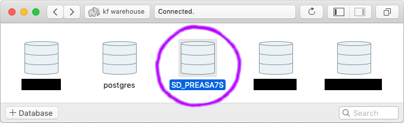
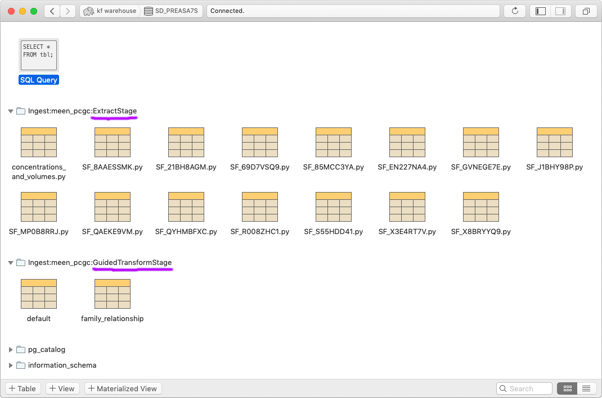

Remote Warehousing¶
Sharing is caring, so storing ingest debugging data only on your own computer is bad news bears. With minimal configuration, the ingest system can connect to a remote warehousing database to centrally store your package’s intermediate Extract and Transform results as well as the KFID lookup cache for the study. This makes it easier for others to assist in replicating, validating, and modifying the results of an ingest.
Warehouse Server Requirements¶
The technical requirements for warehousing are:
- A database server that supports namespace schemas (ask your group
administrator if one has already been set up)
- PostgreSQL will work
- MySQL will not work
- An account on the database server with sufficient access permissions to
invoke
CREATE DATABASE,CREATE SCHEMA,DROP SCHEMA,CREATE TABLE,DROP TABLE, andINSERT - The power of friendship
Note
Connection details for the warehouse used for ingesting Kids First studies can be found at https://github.com/d3b-center/clinical-data-flow/tree/master/warehouse
Local Environment Configuration¶
In your local environment, set a variable called KF_WAREHOUSE_DB_URL
containing a complete login URL, including username and password if needed,
that can be used for calling CREATE DATABASE on the server, like this:
export KF_WAREHOUSE_DB_URL=postgresql://<username>:<password>@<address>:<port>/postgres
Note
PostgreSQL requires all connections to go directly to a database regardless of what you’re doing, so we use the default “postgres” database for this.
If this variable is set, the ingest system will use the designated server as a central warehouse. If this environment variable is not set, then it will skip warehousing.
CLI Temporary Disabling¶
If you don’t want to use the warehouse during a run for any reason, the
--no_warehouse command line argument will make the system treat the
KF_WAREHOUSE_DB_URL environment variable as not set.
Storage Layout¶
After ingesting a study, the warehouse server should have a database named after the study KFID.
Inside that database you should find schemas for each of the warehoused stages prefixed by “Ingest:” and the name of the package. Each schema table will be one of that stage’s returned DataFrames.
Lifecycle¶
Whenever you ingest a package, that package’s prior existing schemas will be replaced.